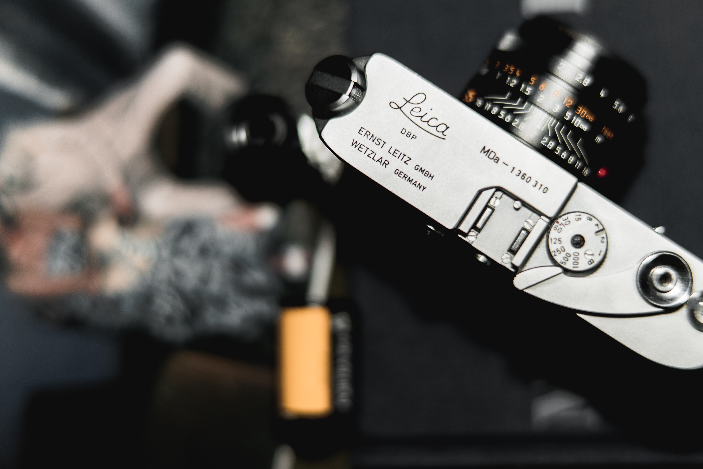

- Film Camera
- 35mm film
- recommend list
Film Camera이란?

Leica AF-C1
가볍고 컴팩트하며 인체 공학적 디자인으로 지금까지 출시된 그 어떤 모델 보다 스트릿 슛에
적합하다는 찬사 받아 온 Leica AF-C1입니다. 40mm F : 2.8과 80mm F : 5.6 두 가지 화각을 지원하며,
버튼으로 쉽게 렌즈를 열고 닫는 커버가 내장 되어 있습니다. 안경을 착용하시는 분들 역시 쉽게 전체 뷰 파이더를 볼 수 있습니다.
정확하고 빠른 자동초점 기능과 우수하게 프로그램된 노출까지 매력 넘치는 Leica AF-C1을 지금 만나 보세요!